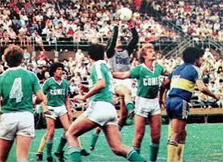
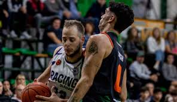

Club Ferro Carril OesteEl Club Atlético Ferro Carril Oeste es un club deportivo de General Pico, La Pampa. Fundado el 24 de junio de 1934, actualmente se desempeña en el Torneo Regional Federal Amateur tras descender del Federal A en 2024. Entre sus logros figura el haber participado en el Campeonato Nacional de 1984, además de ser el único equipo de la Provincia de La Pampa que jugó la primera categoría del fútbol argentino y en Primera B Nacional; lo hizo dos temporadas entre 1986 y 1988. También es el máximo ganador del Torneo Provincial, trofeo más importante del fútbol pampeano, con 4 copas en sus vitrinas. Ferro no tiene clásico a nivel nacional. Su clásico rival es el Club Atlético Costa Brava de General Pico. HistoriaFerro fue fundado el 24 de junio de 1934 por un grupo de padres del colegio 111 para crear un espacio deportivo destinado a los deportistas de la ciudad. Fomentado por el profesor Guillermo Coppo, fue fundado con el nombre de «Club Sportivo Costanero».[1] Tras menos de un mes, se fusiona con el «Club Talleres», naciendo así el «Club Atlético Ferro Carril Oeste», en honor al ramal del tren (Ramal ferroviario General Pico-Telén) que pasaba por la ciudad.Disciplinas y actualidad deportivaEl Club Atlético Ferro Carril Oeste de General Pico es una institución polideportiva muy completa de la provincia de La Pampa. Además del fútbol y el básquetbol, en el club se practican y desarrollan diversas disciplinas fundamentales para la comunidad y la formación de atletas:
ubicacion del estadio coloso barrio talleres
Volver al Inicio. |
Información institucional
 Ferro vs Boca Jrs
 Ferro basquet
|